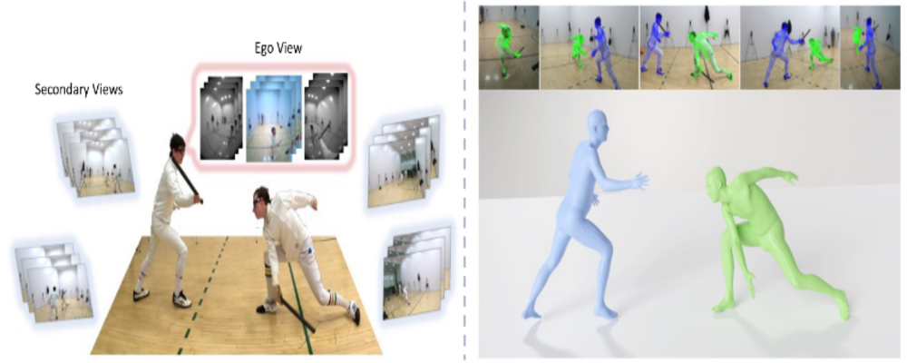

| CV |
Google Scholar | |
I am a Ph.D. student (2019-) at Robotics Institute, Carnegie Mellon University, advised by Prof. Kris Kitani. Earlier, I received my Masters (2017-2019) at CMU working with Prof. Kris Kitani and obtained my B.Tech (2013-2017) in computer science from IIT Bombay working with Prof. Ganesh Ramakrishnan. I am a recipient of 2020 Amazon Fellowship. My graduate study is supported by Gov. of India and IARPA. My research is focused on the development of computer vision algorithms to understand human interactions with other humans and the real world. My current projects span developing methods and infrastructure to obtain data useful in estimating 2D/3D pose of humans under complex interaction scenarios. These projects are part of my longer term goal of improving the ways in which we model human-to-human interactions in the real world. These interaction models can then be used to simulate multi-human interactions and behavior in social settings. |
|
|  |
project page |
pdf |
abstract |
bibtex |
We present EgoHumans, a new multi-view multi-human video benchmark to advance the state-of-the-art of egocentric human 3D pose estimation and tracking. Existing egocentric benchmarks either capture single subject or indoor-only scenarios, which limit the generalization of computer vision algorithms for real-world applications. We propose a novel 3D capture setup to construct a comprehensive egocentric multi-human benchmark in the wild with annotations to support diverse tasks such as human detection, tracking, 2D/3D pose estimation, and mesh recovery. We leverage consumer-grade wearable camera-equipped glasses for the egocentric view, which enables us to capture dynamic activities like playing soccer, fencing, volleyball, etc. Furthermore, our multi-view setup generates accurate 3D ground truth even under severe or complete occlusion. The dataset consists of more than 125k egocentric images, spanning diverse scenes with a particular focus on challenging and unchoreographed multi-human activities and fast-moving egocentric views. We rigorously evaluate existing state-of-the-art methods and highlight their limitations in the egocentric scenario, specifically on multi-human tracking. To address such limitations, we propose EgoFormer, a novel approach with a multi-stream transformer architecture and explicit 3D spatial reasoning to estimate and track the human pose. EgoFormer significantly outperforms prior art by 13.6 IDF1 and 9.3 HOTA on the EgoHumans dataset.
WIP
|
 |
pdf |
abstract |
bibtex |
code
Multi-Object Tracking (MOT) has rapidly progressed with the development of object detection and re-identification. However, motion modeling, which facilitates object association by forecasting short-term trajectories with past observations, has been relatively under-explored in recent years. Current motion models in MOT typically assume that the object motion is linear in a small time window and needs continuous observations, so these methods are sensitive to occlusions and non-linear motion and require high frame-rate videos. In this work, we show that a simple motion model can obtain state-of-the-art tracking performance without other cues like appearance. We emphasize the role of "observation" when recovering tracks from being lost and reducing the error accumulated by linear motion models during the lost period. We thus name the proposed method as Observation-Centric SORT, OC-SORT for short. It remains simple, online, and real-time but improves robustness over occlusion and non-linear motion. It achieves 63.2 and 62.1 HOTA on MOT17 and MOT20, respectively, surpassing all published methods. It also sets new states of the art on KITTI Pedestrian Tracking and DanceTrack where the object motion is highly non-linear.
@article{cao2022observation,
title={Observation-centric sort: Rethinking sort for robust multi-object tracking},
author={Cao, Jinkun and Weng, Xinshuo and Khirodkar, Rawal and Pang, Jiangmiao and Kitani, Kris},
journal={arXiv preprint arXiv:2203.14360},
year={2022}
}
|
 |
pdf |
abstract |
bibtex
Ensemble approaches for deep-learning-based semantic segmentation remain insufficiently explored despite the proliferation of competitive benchmarks and downstream applications. In this work, we explore and benchmark the popular ensembling approach of combining predictions of multiple, independently-trained, state-of-the-art models at test time on popular datasets. Furthermore, we propose a novel method inspired by boosting to sequentially ensemble networks that significantly outperforms the naive ensemble baseline. Our approach trains a cascade of models conditioned on class probabilities predicted by the previous model as an additional input. A key benefit of this approach is that it allows for dynamic computation offloading, which helps deploy models on mobile devices. Our proposed novel ADaptive modulatiON (ADON) block allows spatial feature modulation at various layers using previous-stage probabilities. Our approach does not require sophisticated sample selection strategies during training and works with multiple neural architectures. We significantly improve over the naive ensemble baseline on challenging datasets such as Cityscapes, ADE-20K, COCO-Stuff, and PASCAL-Context and set a new state-of-the-art.
@article{khirodkar2022sequential,
title={Sequential Ensembling for Semantic Segmentation},
author={Khirodkar, Rawal and Smith, Brandon and Chandra, Siddhartha and Agrawal, Amit and Criminisi, Antonio},
journal={arXiv preprint arXiv:2210.05387},
year={2022}
}
|
 |
project page |
pdf |
abstract |
bibtex
Top-down methods for monocular human mesh recovery have two stages: (1) detect human bounding boxes; (2) treat each bounding box as an independent single-human mesh recovery task. Unfortunately, the single-human assumption does not hold in images with multi-human occlusion and crowding. Consequently, top-down methods have difficulties in recovering accurate 3D human meshes under severe person-person occlusion. To address this, we present Occluded Human Mesh Recovery (OCHMR) - a novel top-down mesh recovery approach that incorporates image spatial context to overcome the limitations of the single-human assumption. The approach is conceptually simple and can be applied to any existing top-down architecture. Along with the input image, we condition the top-down model on spatial context from the image in the form of body-center heatmaps. To reason from the predicted body centermaps, we introduce Contextual Normalization (CoNorm) blocks to adaptively modulate intermediate features of the top-down model. The contextual conditioning helps our model disambiguate between two severely overlapping human bounding-boxes, making it robust to multi-person occlusion. Compared with state-of-the-art methods, OCHMR achieves superior performance on challenging multi-person benchmarks like 3DPW, CrowdPose and OCHuman. Specifically, our proposed contextual reasoning architecture applied to the SPIN model with ResNet-50 backbone results in 75.2 PMPJPE on 3DPW-PC, 23.6 AP on CrowdPose and 37.7 AP on OCHuman datasets, a significant improvement of 6.9 mm, 6.4 AP and 20.8 AP respectively over the baseline.
@article{khirodkar2022occluded,
title={Occluded Human Mesh Recovery},
author={Khirodkar, Rawal and Tripathi, Shashank and Kitani, Kris},
journal={arXiv preprint arXiv:2203.13349},
year={2022}
}
|
 |
project page |
Amazon Science |
pdf |
abstract |
bibtex |
code
A key assumption of top-down human pose estimation approaches is their expectation of having a single person/instance present in the input bounding box. This often leads to failures in crowded scenes with occlusions. We propose a novel solution to overcome the limitations of this fundamental assumption. Our Multi-Instance Pose Network (MIPNet) allows for predicting multiple 2D pose instances within a given bounding box. We introduce a Multi-Instance Modulation Block (MIMB) that can adaptively modulate channel-wise feature responses for each instance and is parameter efficient. We demonstrate the efficacy of our approach by evaluating on COCO, CrowdPose, and OCHuman datasets. Specifically, we achieve 70.0 AP on CrowdPose and 42.5 AP on OCHuman test sets, a significant improvement of 2.4 AP and 6.5 AP over the prior art, respectively. When using ground truth bounding boxes for inference, MIPNet achieves an improvement of 0.7 AP on COCO, 0.9 AP on CrowdPose, and 9.1 AP on OCHuman validation sets compared to HRNet. Interestingly, when fewer, high confidence bounding boxes are used, HRNet's performance degrades (by 5 AP) on OCHuman, whereas MIPNet maintains a relatively stable performance (drop of 1 AP) for the same inputs.
@InProceedings{Khirodkar_2021_ICCV,
author = {Khirodkar, Rawal and Chari, Visesh and Agrawal, Amit and Tyagi, Ambrish},
title = {Multi-Instance Pose Networks: Rethinking Top-Down Pose Estimation},
booktitle = {Proceedings of the IEEE/CVF International Conference on Computer Vision (ICCV)},
month = {October},
year = {2021},
pages = {3122-3131}
}
|
 |
pdf |
abstract |
bibtex |
code
The use of iterative pose refinement is a critical processing step for 6D object pose estimation, and its performance depends greatly on one's choice of image representation. Image representations learned via deep convolutional neural networks (CNN) are currently the method of choice as they are able to robustly encode object keypoint locations. However, CNN-based image representations are computational expensive to use for iterative pose refinement, as they require that image features are extracted using a deep network, once for the input image and multiple times for rendered images during the refinement process. Instead of using a CNN to extract image features from a rendered RGB image, we propose to directly render a deep feature image. We call this deep texture rendering, where a shallow multi-layer perceptron is used to directly regress a view invariant image representation of an object. Using an estimate of the pose and deep texture rendering, our system can render an image representation in under 1ms. This image representation is optimized such that it makes it easier to perform nonlinear 6D pose estimation by adding a differentiable Levenberg-Marquardt optimization network and back-propagating the 6D pose alignment error. We call our method, RePOSE, a Real-time Iterative Rendering and Refinement algorithm for 6D POSE estimation. RePOSE runs at 71 FPS and achieves state-of-the-art accuracy of 51.6% on the Occlusion LineMOD dataset - a 4.1% absolute improvement over the prior art, and comparable performance on the YCB-Video dataset with a much faster runtime than the other pose refinement methods.
@InProceedings{Iwase_2021_ICCV,
author = {Iwase, Shun and Liu, Xingyu and Khirodkar, Rawal and Yokota, Rio and Kitani, Kris M.},
title = {RePOSE: Fast 6D Object Pose Refinement via Deep Texture Rendering},
booktitle = {Proceedings of the IEEE/CVF International Conference on Computer Vision (ICCV)},
month = {October},
year = {2021},
pages = {3303-3312}
}
|
 |
pdf |
abstract |
bibtex
Domain Randomization (DR) is known to require a significant amount of training data for good performance. We argue that this is due to DR's strategy of random data generation using a uniform distribution over simulation parameters, as a result, DR often generates samples which are uninformative for the learner. In this work, we theoretically analyze DR using ideas from multi-source domain adaptation. Based on our findings, we propose Adversarial Domain Randomization (ADR) as an efficient variant of DR which generates adversarial samples with respect to the learner during training. We implement ADR as a policy whose action space is the quantized simulation parameter space. At each iteration, the policy's action generates labeled data and the reward is set as negative of learner's loss on this data. As a result, we observe ADR frequently generates novel samples for the learner like truncated and occluded objects for object detection and confusing classes for image classification. We perform evaluations on datasets like CLEVR, Syn2Real, and VIRAT for various tasks where we demonstrate that ADR outperforms DR by generating fewer data samples.
@article{DBLP:journals/corr/abs-1812-00491,
author = {Rawal Khirodkar and
Donghyun Yoo and
Kris M. Kitani},
title = {{VADRA:} Visual Adversarial Domain Randomization and Augmentation},
journal = {CoRR},
volume = {abs/1812.00491},
year = {2018},
url = {http://arxiv.org/abs/1812.00491},
archivePrefix = {arXiv},
eprint = {1812.00491},
timestamp = {Tue, 01 Jan 2019 15:01:25 +0100},
biburl = {https://dblp.org/rec/journals/corr/abs-1812-00491.bib},
bibsource = {dblp computer science bibliography, https://dblp.org}
}
|
 |
pdf |
abstract |
bibtex |
code
We address the issue of domain gap when making use of synthetic data to train a scene-specific object detector and pose estimator. While previous works have shown that the constraints of learning a scene-specific model can be leveraged to create geometrically and photometrically consistent synthetic data, care must be taken to design synthetic content which is as close as possible to the real-world data distribution. In this work, we propose to solve domain gap through the use of appearance randomization to generate a wide range of synthetic objects to span the space of realistic images for training. An ablation study of our results is presented to delineate the individual contribution of different components in the randomization process. We evaluate our method on VIRAT, UA-DETRAC, EPFL-Car datasets, where we demonstrate that using scene specific domain randomized synthetic data is better than fine-tuning off-the-shelf models on limited real data.
@inproceedings{khirodkar2019domain,
title={Domain randomization for scene-specific car detection and pose estimation},
author={Khirodkar, Rawal and Yoo, Donghyun and Kitani, Kris},
booktitle={2019 IEEE Winter Conference on Applications of Computer Vision (WACV)},
pages={1932--1940},
year={2019},
organization={IEEE}
}
|
{kind=link}
|
|
| Learning to play with blender in my spare time. Checkout some of my projects here. |
 |
 |